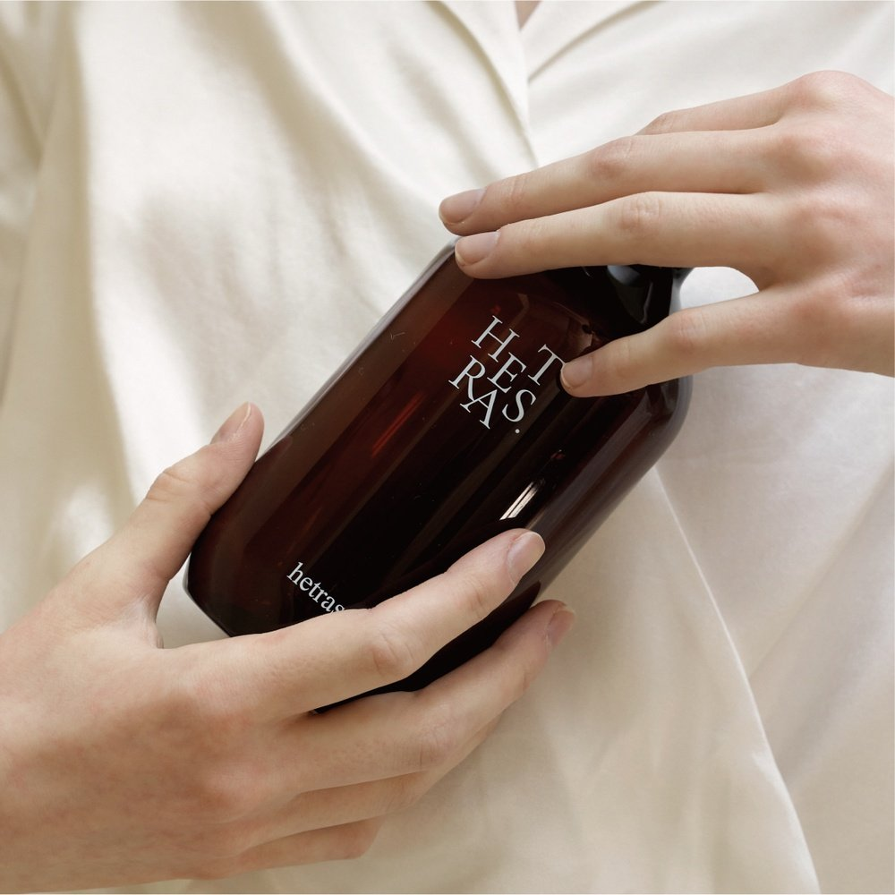

Hetras Premium Reed Diffuser Review at a Glance
This Hetras Premium Reed Diffuser review looks at a big-bottle home fragrance set that's popular in Korea as a housewarming gift. Hetras (헤트라스) is a Korean home-fragrance brand, and this set includes three 500ml reed diffusers in the Hotel Wood scent.
The appeal is simple: a calm, hotel-lobby style wood scent, large bottles that last, and a box that's ready to give.

What's in the Set
| Item | Details |
|---|---|
| Brand | Hetras (헤트라스) · Korea |
| Product | Premium large reed diffuser gift set |
| Contents | 3 bottles × 500ml |
| Scent (reviewed) | Hotel Wood |
| Bottle | Amber glass |
| Best For | Living rooms, entryways, bedrooms, gifts |

Photo note: Only 3 of the listing photos show the product itself, so this review uses those 3. We didn't add any AI-generated images.
What the Hotel Wood Scent Is Like
Korean buyers describe Hotel Wood as a soft, woody scent that feels like walking into a hotel lobby. It's not sweet or floral, and it doesn't hit you when you open the door. Instead it fills the room slowly and evenly. That makes it an easy pick if you're buying for someone whose taste you don't know well.
How to Use a Reed Diffuser
- Open the bottle and put the reeds in.
- After a few hours, flip the reeds once so both ends are soaked.
- Flip them again every few days when the scent fades.
- Keep the bottle away from direct sun, heaters, pets and small children, and wipe up spills quickly because fragrance oil can mark wood and plastic.
Pros & Cons
✅ Pros
- Three large 500ml bottles: one for each room, or keep two as refills.
- Calm, unisex wood scent that most people like.
- Gift-ready box for housewarmings and holidays.
- No electricity, no flame, no noise.
⚠️ Cons
- Reed diffusers are gentle; big rooms need more reeds or two bottles.
- Scent preference is personal, so try a small sample first if you can.
- Fragrance oil can damage some surfaces if spilled.
Who It Suits (and Who Should Skip It)
- Great for: Housewarming and holiday gifts.
- Great for: Anyone who wants a subtle hotel-style scent at home.
- Maybe skip: If you're sensitive to fragrance, or you want a strong scent instantly (a candle or electric diffuser works faster).
Hetras Reed Diffuser FAQ
What is the Hetras Premium Reed Diffuser set?
It's a Korean home-fragrance gift set of three large 500ml reed diffuser bottles. The Korean listing we checked is in the Hotel Wood scent.
What does Hotel Wood smell like?
Korean buyers describe it as a calm, woody scent that reminds them of a hotel lobby. It's subtle rather than sweet or floral.
How long does a 500ml reed diffuser last?
It depends on the number of reeds, room temperature and airflow. A bottle this size usually lasts much longer than a typical 100–200ml diffuser. Use fewer reeds if you want it to last longer.
How do I make the scent stronger?
Flip the reeds every few days so the soaked ends face up, or add a few more reeds. Keep it away from direct sunlight, heaters and air-conditioner vents.
Large Reed Diffuser Sets
Hetras isn't widely sold on US Amazon. Browse similar large reed diffuser sets.